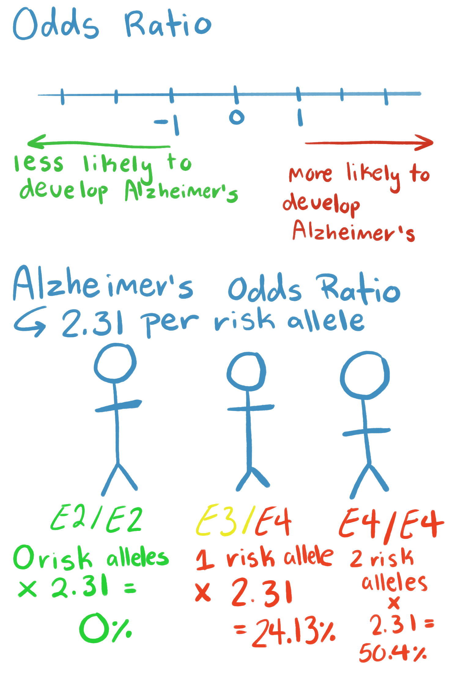
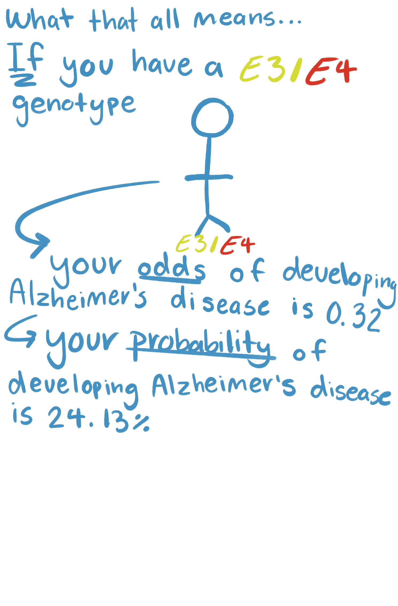
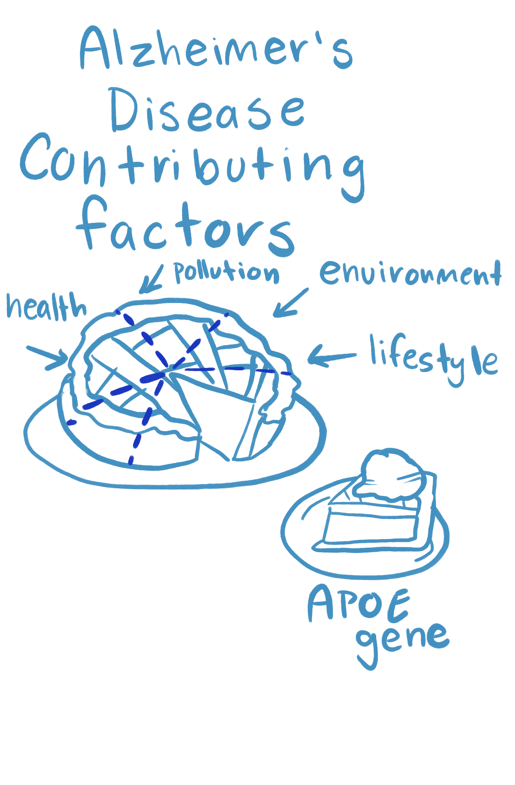

Overview
You have selected to participate in a Direct-to-Consumer (D-T-C) genetic testing service!
Informed Consent
Before participating, you were asked to give informed consent before agreeing to submit your genomic information to our company for testing, but there were also finer points to giving informed consent that we would like to go over.

Data Disclosure Risk
How are test results reported, and under what circumstances can results be disclosed?
Results are disclosed in a Return of Results where your results will be effectively communicated to you in a way to engage full understanding. Your results may be disclosed by opting-in to be used for research purposes.
Law Enforcement Access
Your results may be subpoenaed by law enforcement. There may be a potential transfer in ownership of our company, where our agreement not to disclose your genetic data may become void. Hacking can occur, and your genetic data may not be safe. But overwhelmingly, disclosures are made by our participants. You are responsible for safeguarding your information from third parties, family, etc. Please be advised to inform yourself fully before sharing your genetic data with any other third party. Third parties that work with law enforcement include: GEDMatch and Family Tree. While your data is deidentified, that is to say, your name and information are not attached to our store of DNA, you may still be able to be found through D-T-C databases, identifiable public databases, genealogical records, and de-identified public databases. A large pool of Americans of European descent are overrepresented in our data pools. This means this population is especially at risk of having their de-identified information identified. Further discussion of why that is is discussed in the linked article Lottery winners and accident victims: Is happiness relative? (Brickman et al., 1978)
Law enforcement uses its own genomic database called CODIS.
Black Americans are overrepresented in this database as compared to their percentage in the population. This is relevant because while CODIS uses STRs to identify individuals, it has been shown that the STRs in CODIS can be matched with SNPs found and used in D-T-C products. Identity inference of genomic data using long-range family searches (Erlich et al., 2018)
This is something to consider when uploading your genomic data to a third-party service.


Familial Information
Could this test be informative about other family members’ health or relationships?
Your genetic information is familial by nature, you will also be gaining information about non-consenting family members. You do not have to opt-in to find DNA relatives across our databases, however.
Emotional Risks
Are there any emotional risks associated with this test?
You can learn about your carrier status, health risks, family relationships or ancestry (non-paternity or misattributed parentage, non-disclosed adoption, sperm donation, or otherwise traumatic lineage) misattribution (e.g. assumed biological relationship not biological), heteropaternal superfecundation (e.g. two different fathers for a set of fraternal twins), medical mix up, mistake, or crime (e.g. fertility fraud), surprising relatedness (de-identifying “anonymous” donors, previously unknown relatives, inbreeding in parents or relatedness to sexual partner).
Emotional risks associated with the test depend on how informed you are as a consumer; the more knowledgeable you are, the less likely you are to be completely surprised by what you learn.
Consider hiring a genetic counselor to discuss any concerning results you may receive even further.
A well-established psychological construct states that we will return to our baseline levels of happiness eventually, even after receiving bad news (or good news). Lottery winners and accident victims: Is happiness relative? (Brickman et al., 1978).
Do you have the opportunity to ask questions?
You may hire a genomic counselor and ask them questions; however, a more accessible way to ask questions is by looking at the 23andme customer care page 23andMe Customer Care.
Interpreting Results
What do the test results mean?
Alzheimer’s Disease
Alzheimer’s is a complex, progressive, and irreversible neurodegenerative brain disease that affects 7 million people in the US. Symptoms include memory loss, cognitive decline, and personality changes. Late-Onset Alzheimer’s disease is diagnosed after 65 and describes most cases.

It has a complex pattern of inheritance, meaning that the condition is not caused by one gene, but by many genes working together, and is very heterogeneous, meaning that the condition is highly variable and that people with the same condition may have different symptoms, different levels of severity, or different underlying causes.

The three most common variants of the APOE gene are E2, E3, and E4. The APOE gene (apolipoprotein E gene) is commonly tested for its clinical significance in prediction of Alzheimer’s. The E4 variant is associated with increased risk, but the E4 variant is neither necessary nor sufficient for causing Alzheimer’s 23andMe.

You are heterogenous for this trait
What that means is that your genotype is E3/E4. That means that you have one risk factor allele of the APOE gene and one non-risk factor allele. A gene is made up of two alleles. E4 is the risk factor, E3 is considered neutral, and E2 is a protective factor (it reduces your odds of Alzheimer's disease). We can calculate what percent of African Americans have your same genotype (E3/E4) by using the Hardy-Weinberg equilibrium equation (Q = .18, P = 1-.18, 2(q(p)) = .295). Thus, deducing that 29.5% of African Americans share your same genotype.

Modifiable Risk Factors
Genetics are not destiny. A potential factor that may moderate your risk for Alzheimer's disease is exercise. For example, a study conducted by 23andMe 23andme found that adults over the age of 60 with an E4 variant in the APOE gene who average at least 30 minutes of exercise per week are significantly less likely to have Alzheimer’s disease. Environmental modifiers include diet, type 2 diabetes, smoking, and cardiovascular disease (obesity, high cholesterol, high blood pressure). Risk factors and risk reduction (Alzheimer's Disease International).

Odds Ratio
An odds ratio (OR) is an estimation of how strongly a genetic variant is associated with a condition. An odds ratio greater than 1 means that people with that genotype are at higher odds of developing Alzheimer’s, while an odds ratio of less than 1 means that people with that genotype are at lower odds of developing the condition compared to the reference group.
The odds ratio for Alzheimer’s is 2.31. If you would like more details on how we found that number please click onto the scientific details tab and look for our notes on GWAS.
An OR of 2.31 for Alzheimer’s disease means that for each additional E4 allele, the odds of developing Alzheimer’s are 2.31 times higher compared to the reference group. The baseline lifetime risk of Alzheimer’s disease in the African American population is 16%. This value was converted to odds and adjusted using an odds ratio of 2.31 for each APOE E4 allele to estimate your genotype-specific risk.
Your approximate risk for Alzheimer’s (i.e. probability) is 24%. The calculations done to find this probability are in the scientific details tab under “your risk calculations.” This does not mean your overall risk for Alzheimer’s disease is 24%, it means that after accounting for the APOE E4 effect in your genotype model, your estimated probability of developing Alzheimer’s disease increases from the baseline 16% to about 24%.


This probability is only based on your APOE genetic risk factor, it does not account for other genetic, environmental, or lifestyle factors that also influence disease risk.

This risk estimate is not necessarily your sole/true risk for Alzheimer’s, there are other genetic factors that influence Alzheimer’s besides APOE, as well as environmental factors, this calculated risk score is an average risk based on genotype and many other factors.
Genetics are not destiny, the APOE variants only explain a small piece of the puzzle that is Alzheimer’s. Please revisit our modifiable risk factors section to see what actions you can take now.